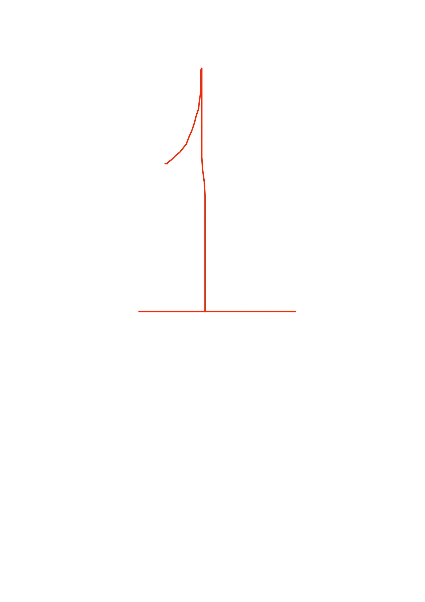
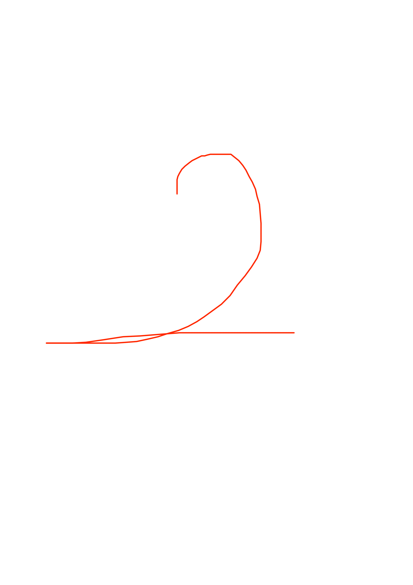
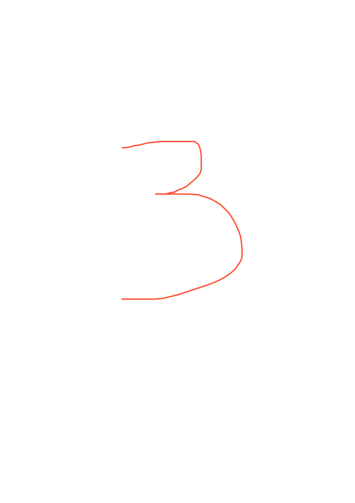
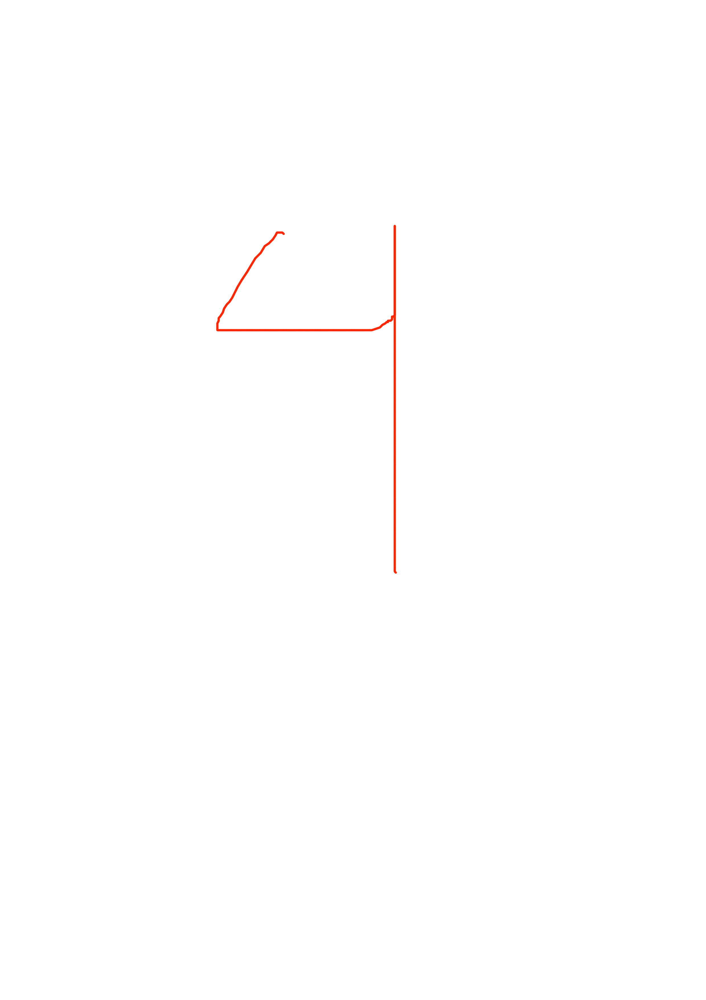

Tenha uma boa leitura!
Lembre-se de passar por aqui para ver as novidades,
caso voce tenha visto tudo, não se preocupe, tera um
aviso se tiver lido aquele jornal, sempre venha aqui
para dar uma olhadinha aos jornais novos que virão
Novo jornal em: 24:00:00
Já lido.
   Copyright © 2024 1nfinite8ooks. All rights reserved.